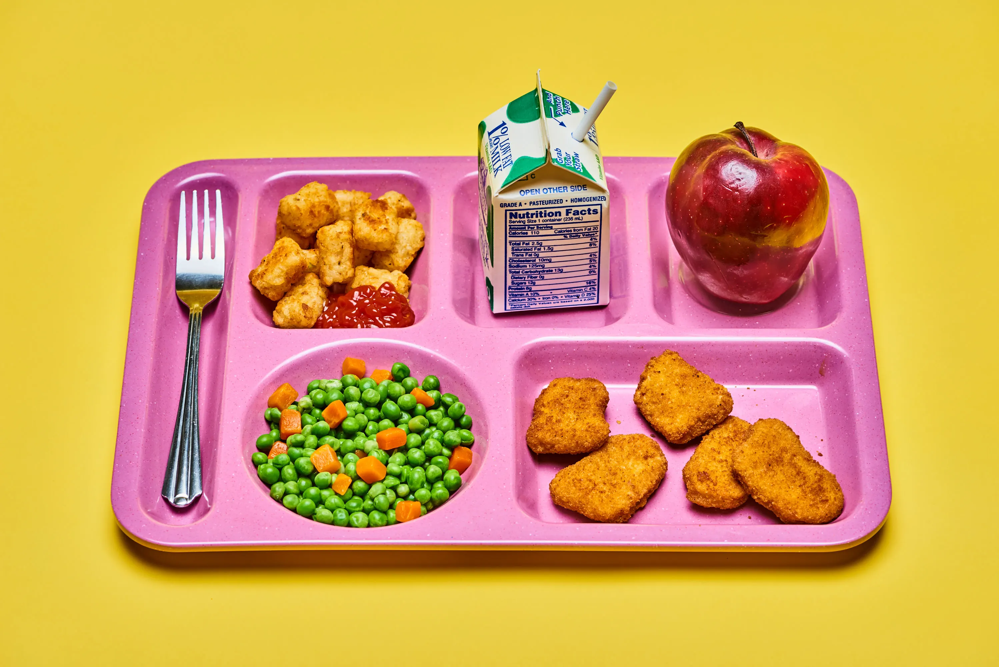
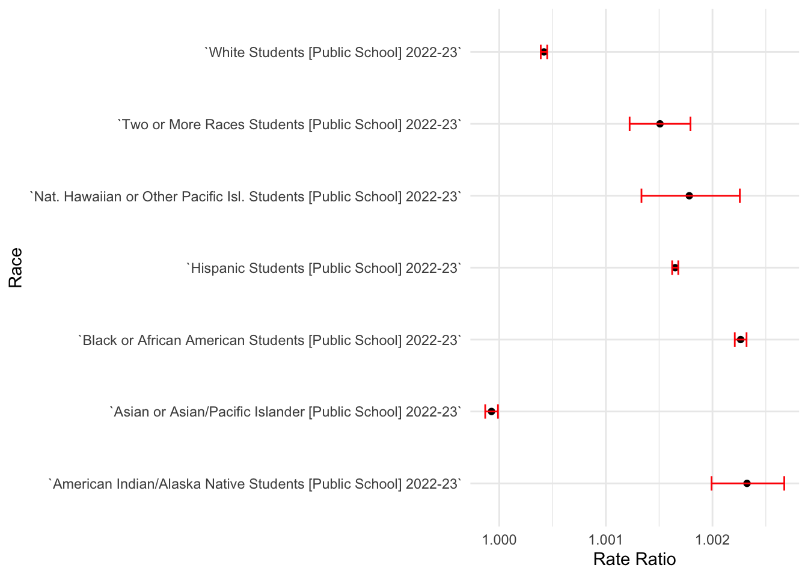
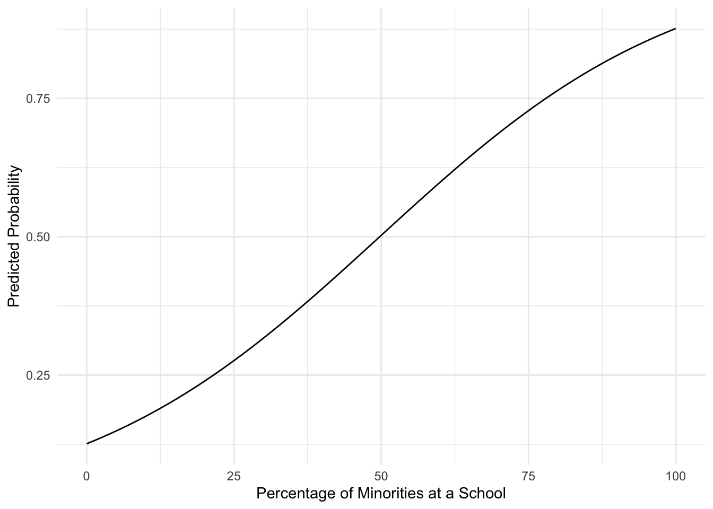

Here we provide a detailed analysis using more sophisticated statistics techniques.

This comes from the file analysis.qmd.
Introduction
Throughout this semester, our team has aimed to answer the following questions:
Is dependency on Free and Reduced Lunch programs in public schools proportional to the minority population in those areas? That is, are more students enrolled in such programs when they come from an area that is predominantly African American groups, Hispanic groups, etc.?
By looking at public school data retained from the Common Core and cross-comparing with Census data obtained from the government, we have been able to compile our findings as presented below.
Section 1: Exploratory Data Analysis
Load the necessary data set here:
library(tidyverse)
── Attaching core tidyverse packages ──────────────────────── tidyverse 2.0.0 ──
✔ dplyr 1.1.4 ✔ readr 2.1.5
✔ forcats 1.0.0 ✔ stringr 1.5.1
✔ ggplot2 3.5.1 ✔ tibble 3.2.1
✔ lubridate 1.9.3 ✔ tidyr 1.3.1
✔ purrr 1.0.2
── Conflicts ────────────────────────────────────────── tidyverse_conflicts() ──
✖ dplyr::filter() masks stats::filter()
✖ dplyr::lag() masks stats::lag()
ℹ Use the conflicted package (<http://conflicted.r-lib.org/>) to force all conflicts to become errors
print(getwd())
[1] "/Users/richardpilleul/Documents/Boston University/Fall 24/CAS MA 415/HW3/ma-4615-fa24-final-project-group-8"
data <-read_rds(here::here("dataset/clean_aid_data.rds"))
1.1 Top 10 Schools with the Highest Number of Students Enrolled in Free and Reduced Lunch Programs
We start by extracting the top 10 schools from the school year 2022–2023 with the highest number of students enrolled in government-aided lunch programs. Here, we considered both the Free Lunch Program and the Reduced Lunch Program, combining data from both.
From the data, the top 10 schools with the highest enrollment rates are:
School Name
Enrollment Rate (%)
Highlands Community Charter
85.6%
North Star Academy Charter School
83.7%
Alabama Connections Academy
65.1%
Reading SHS
85.7%
California Virtual Academy @ Los Angeles
73.7%
Upper Darby SHS
95.0%
River Springs Charter
57.8%
North Shore Senior High
85.7%
Visions in Education
55.2%
Paramount High
94.3%
Throughout the rest of this analysis, our team chose to focus on these 10 schools.
1.2 - Minority Breakdown for the Top 10 Schools with the Most Free and Reduced Lunch Enrollments
Now, we want to break down the ratio of minority students within these schools.
Here’s a clean and organized version for your Analysis Page using headings, bullet points, and tables to make the information clear and easy to digest:
Minority Student Ratios in Top Schools
To understand the relationship between minority student populations and the Free or Reduced Lunch Program participation rates, we analyzed the top schools.
Highlands Community Charter School (Sacramento, CA)
Free or Reduced Lunch: 85%
Minority Population in School:
Hispanic: 20.4%
African American: 2.5%
Asian: 19.4%
Total Minority: 42.3%
North Star Academy Charter School (Newark, NJ)
Free or Reduced Lunch: 84%
Minority Population in School:
Hispanic: 16.6%
African American: 80.8%
Asian: 0.2%
Total Minority: 97.6%
Alabama Connections Academy (Athens, AL)
Free or Reduced Lunch: 65%
Minority Population in School:
Hispanic: 5.8%
African American: 29.8%
Asian: 0.8%
Total Minority: 36.4%
Reading Senior High School (Reading, PA)
Free or Reduced Lunch: 86%
Minority Population in School:
Hispanic: 86.4%
African American: 7.4%
Asian: 0.1%
Total Minority: 93.9%
California Virtual Academy (Simi Valley, CA)
Free or Reduced Lunch: 74%
Minority Population in School:
Hispanic: 53.6%
African American: 20%
Asian: 5.5%
Total Minority: 79.1%
Upper Darby Senior High School (Drexel Hill, PA)
Free or Reduced Lunch: 95%
Minority Population in School:
Hispanic: 12.9%
African American: 52.2%
Asian: 14.1%
Total Minority: 79.2%
River Springs Charter School (Temecula, CA)
Free or Reduced Lunch: 58%
Minority Population in School:
Hispanic: 48.8%
African American: 4.7%
Asian: 2.5%
Total Minority: 56%
North Shore Senior High School (Houston, TX)
Free or Reduced Lunch: 86%
Minority Population in School:
Hispanic: 71.7%
African American: 22.3%
Asian: 0.9%
Total Minority: 94.9%
Visions In Education (Carmichael, CA)
Free or Reduced Lunch: 55%
Minority Population in School:
Hispanic: 31.6%
African American: 8.8%
Asian: 5.4%
Total Minority: 45.8%
Paramount High (Paramount, CA)
Free or Reduced Lunch: 94%
Minority Population in School:
Hispanic: 89.9%
African American: 6.7%
Asian: 1.3%
Total Minority: 97.9%
Among the top 10 schools with the highest enrollment rates of students in the Free and Reduced Lunch programs, those with the largest minority populations—particularly African American and Hispanic students—also had the highest number of students relying on these government programs. This suggests a potential correlation between a larger African American and Hispanic student population and increased program participation. In the following section, we will cross-reference this data with census data to examine whether a higher minority population in general corresponds to a greater percentage of students enrolled in these programs.
1.3 Top 10 Schools with the Largest Minority Populations
Another part of our team’s analysis included finding the top 10 schools with the highest minority populations to see if they would match the schools with the highest enrollment rates in Free and Reduced Lunch programs. The list was as follows:
School Name
Minority Percentage (%)
North Star Academy Charter School
98.7%
Reading SHS
95.9%
Brooklyn Technical High School
77.3%
California Virtual Academy @ Los Angeles
83.4%
Granada Hills Charter
75.6%
Duncanville H S
98.1%
North Shore Senior High
96.0%
River Springs Charter
63.4%
John A. Ferguson Senior High
96.7%
Blue Ridge Academy
61.1%
Several schools appeared on both lists—North Star Academy Charter School, Reading SHS, California Virtual Academy @ Los Angeles, and North Shore Senior High—further supporting our theory that a higher proportion of minority students is associated with a greater percentage of students enrolled in Free and Reduced Lunch programs.
Section 2: Cross-Comparison
After finding the top ten schools with the largest amount of students in Free and Reduced Lunch Programs above, we aim to see if there is a correlation between the proportion of minorities in those schools and the proportion of minorities in the surrounding county.
Here’s a clean and organized version for your Analysis Page using headings, bullet points, and tables to make the information clear and easy to digest:
Minority Student Ratios in Top Schools
To understand the relationship between minority student populations and the Free or Reduced Lunch Program participation rates, we analyzed the top schools.
Highlands Community Charter School (Sacramento, CA)
Minority Population in Zip Code:
Hispanic: 36%
African American: 15%
Asian: 18%
Total Minority: 69%
North Star Academy Charter School (Newark, NJ)
Minority Population in Zip Code:
Hispanic: 26%
African American: 49%
Asian: 0%
Total Minority: 75%
Alabama Connections Academy (Athens, AL)
Minority Population in Zip Code:
Hispanic: 8%
African American: 4%
Asian: 0%
Total Minority: 12%
Reading Senior High School (Reading, PA)
Minority Population in Zip Code:
Hispanic: 73%
African American: 6%
Asian: 0%
Total Minority: 79%
California Virtual Academy (Simi Valley, CA)
Minority Population in Zip Code:
Hispanic: 26%
African American: 1%
Asian: 11%
Total Minority: 38%
Upper Darby Senior High School (Drexel Hill, PA)
Minority Population in Zip Code:
Hispanic: 5%
African American: 19%
Asian: 5%
Total Minority: 29%
River Springs Charter School (Temecula, CA)
Minority Population in Zip Code:
Hispanic: 26%
African American: 4%
Asian: 11%
Total Minority: 41%
North Shore Senior High School (Houston, TX)
Minority Population in Zip Code:
Hispanic: 69%
African American: 16%
Asian: 4%
Total Minority: 89%
Visions In Education (Carmichael, CA)
Minority Population in Zip Code:
Hispanic: 15%
African American: 6%
Asian: 8%
Total Minority: 29%
Paramount High (Paramount, CA)
Minority Population in Zip Code:
Hispanic: 81%
African American: 9%
Asian: 4%
Total Minority: 94%
One observation is that a high minority population at a school does not seem to necessarily correlate with the zip code the school is located in. Several schools yielded over 50% minority but the zip code yielded less than 25% minority; such as Upper Darby SHS and to a lesser extent, Athens Academy and Visions in Education. This helps to illustrate the extent of school segregation that takes place in our country.
Section 3: Statistical Modeling
3.1 - Modeling
Two models were used, namely, a negative binomial regression, and a logistic regression. Running the code below gives summary statistics with estimated coefficients and p values. For the negative binomial model, coefficients were exponentiated to convert them into rate ratios. Example interpretation: American Indian/Alaska Native Students [Public School] 2022-23 has a rate ratio of 1.0023239. This means that, for every additional American Indian/Alaska Native student at a school, we can expect the count of free-lunch program enrolments at that school to increase by 0.23%. The first plot below shows the rate ratios for each race. Also, based on the summary statistics, all races have a statistically significant p value at the 5% level, and Asian students were the only race with a rate ratio slightly less than 1. This implies that for every additional Asian student at a school, we can expect the count of free-lunch program enrolments at that school to decrease very slightly. The plot below shows that American Indian/Alaska Native students brought the most impact into their schools regarding increasing free-lunch enrollment, while White and Asian students are much less impactful. There is also a relatively larger variance for American Indian/Alaska Native, Native Hawaiian/Other Pacific Islander, and Two or More Races students as opposed to the rest of the groups.
library(MASS) # Used for negative binomial regression
Attaching package: 'MASS'
The following object is masked from 'package:dplyr':
select
data$`Free Lunch Eligible [Public School] 2022-23`<-as.numeric(data$`Free Lunch Eligible [Public School] 2022-23`)data$`Black or African American Students [Public School] 2022-23`<-as.numeric(data$`Black or African American Students [Public School] 2022-23`)data$`White Students [Public School] 2022-23`<-as.numeric(data$`White Students [Public School] 2022-23`)data$`Hispanic Students [Public School] 2022-23`<-as.numeric(data$`Hispanic Students [Public School] 2022-23`)data$`American Indian/Alaska Native Students [Public School] 2022-23`<-as.numeric(data$`American Indian/Alaska Native Students [Public School] 2022-23`)data$`Asian or Asian/Pacific Islander [Public School] 2022-23`<-as.numeric(data$`Asian or Asian/Pacific Islander Students [Public School] 2022-23`)data$`Nat. Hawaiian or Other Pacific Isl. Students [Public School] 2022-23`<-as.numeric(data$`Nat. Hawaiian or Other Pacific Isl. Students [Public School] 2022-23`)data$`Two or More Races Students [Public School] 2022-23`<-as.numeric(data$`Two or More Races Students [Public School] 2022-23`)data$`Total Race/Ethnicity [Public School] 2022-23`<-as.numeric(data$`Total Race/Ethnicity [Public School] 2022-23`)# Negative Binomial Regressionnegative_binomial_model <-glm.nb(`Free Lunch Eligible [Public School] 2022-23`~`White Students [Public School] 2022-23`+`Black or African American Students [Public School] 2022-23`+`Hispanic Students [Public School] 2022-23`+`American Indian/Alaska Native Students [Public School] 2022-23`+`Asian or Asian/Pacific Islander [Public School] 2022-23`+`Nat. Hawaiian or Other Pacific Isl. Students [Public School] 2022-23`+`Two or More Races Students [Public School] 2022-23`, data)summary_model_nb <-summary(negative_binomial_model)coef_table <-coef(summary_model_nb)exp_coef <-exp(coef_table[, "Estimate"])conf_intervals <-exp(confint(negative_binomial_model))
race
(Intercept) (Intercept)
`White Students [Public School] 2022-23` `White Students [Public School] 2022-23`
`Black or African American Students [Public School] 2022-23` `Black or African American Students [Public School] 2022-23`
`Hispanic Students [Public School] 2022-23` `Hispanic Students [Public School] 2022-23`
`American Indian/Alaska Native Students [Public School] 2022-23` `American Indian/Alaska Native Students [Public School] 2022-23`
`Asian or Asian/Pacific Islander [Public School] 2022-23` `Asian or Asian/Pacific Islander [Public School] 2022-23`
`Nat. Hawaiian or Other Pacific Isl. Students [Public School] 2022-23` `Nat. Hawaiian or Other Pacific Isl. Students [Public School] 2022-23`
`Two or More Races Students [Public School] 2022-23` `Two or More Races Students [Public School] 2022-23`
rate_ratio
(Intercept) 126.6246621
`White Students [Public School] 2022-23` 1.0004195
`Black or African American Students [Public School] 2022-23` 1.0022642
`Hispanic Students [Public School] 2022-23` 1.0016503
`American Indian/Alaska Native Students [Public School] 2022-23` 1.0023239
`Asian or Asian/Pacific Islander [Public School] 2022-23` 0.9999274
`Nat. Hawaiian or Other Pacific Isl. Students [Public School] 2022-23` 1.0017825
`Two or More Races Students [Public School] 2022-23` 1.0015075
confidence_lower
(Intercept) 125.0208748
`White Students [Public School] 2022-23` 1.0003892
`Black or African American Students [Public School] 2022-23` 1.0022091
`Hispanic Students [Public School] 2022-23` 1.0016217
`American Indian/Alaska Native Students [Public School] 2022-23` 1.0019913
`Asian or Asian/Pacific Islander [Public School] 2022-23` 0.9998683
`Nat. Hawaiian or Other Pacific Isl. Students [Public School] 2022-23` 1.0013339
`Two or More Races Students [Public School] 2022-23` 1.0012228
confidence_higher
(Intercept) 128.2489354
`White Students [Public School] 2022-23` 1.0004500
`Black or African American Students [Public School] 2022-23` 1.0023196
`Hispanic Students [Public School] 2022-23` 1.0016790
`American Indian/Alaska Native Students [Public School] 2022-23` 1.0026734
`Asian or Asian/Pacific Islander [Public School] 2022-23` 0.9999877
`Nat. Hawaiian or Other Pacific Isl. Students [Public School] 2022-23` 1.0022565
`Two or More Races Students [Public School] 2022-23` 1.0017935
p_val
(Intercept) 0.000000e+00
`White Students [Public School] 2022-23` 4.772919e-174
`Black or African American Students [Public School] 2022-23` 0.000000e+00
`Hispanic Students [Public School] 2022-23` 0.000000e+00
`American Indian/Alaska Native Students [Public School] 2022-23` 5.193674e-46
`Asian or Asian/Pacific Islander [Public School] 2022-23` 3.968014e-02
`Nat. Hawaiian or Other Pacific Isl. Students [Public School] 2022-23` 2.481767e-15
`Two or More Races Students [Public School] 2022-23` 2.447502e-28
results <- results[results$race !="(Intercept)", ]ggplot(results, aes(y = race, x = rate_ratio)) +geom_point() +geom_errorbarh(aes(xmin = confidence_lower, xmax = confidence_higher), height =0.2, color ="red") +labs(y ="Race", x ="Rate Ratio") +theme_minimal()

print(summary_model_nb)
Call:
glm.nb(formula = `Free Lunch Eligible [Public School] 2022-23` ~
`White Students [Public School] 2022-23` + `Black or African American Students [Public School] 2022-23` +
`Hispanic Students [Public School] 2022-23` + `American Indian/Alaska Native Students [Public School] 2022-23` +
`Asian or Asian/Pacific Islander [Public School] 2022-23` +
`Nat. Hawaiian or Other Pacific Isl. Students [Public School] 2022-23` +
`Two or More Races Students [Public School] 2022-23`,
data = data, init.theta = 2.65650311, link = log)
Coefficients:
Estimate
(Intercept) 4.841e+00
`White Students [Public School] 2022-23` 4.194e-04
`Black or African American Students [Public School] 2022-23` 2.262e-03
`Hispanic Students [Public School] 2022-23` 1.649e-03
`American Indian/Alaska Native Students [Public School] 2022-23` 2.321e-03
`Asian or Asian/Pacific Islander [Public School] 2022-23` -7.265e-05
`Nat. Hawaiian or Other Pacific Isl. Students [Public School] 2022-23` 1.781e-03
`Two or More Races Students [Public School] 2022-23` 1.506e-03
Std. Error
(Intercept) 5.376e-03
`White Students [Public School] 2022-23` 1.491e-05
`Black or African American Students [Public School] 2022-23` 2.309e-05
`Hispanic Students [Public School] 2022-23` 1.162e-05
`American Indian/Alaska Native Students [Public School] 2022-23` 1.630e-04
`Asian or Asian/Pacific Islander [Public School] 2022-23` 3.532e-05
`Nat. Hawaiian or Other Pacific Isl. Students [Public School] 2022-23` 2.250e-04
`Two or More Races Students [Public School] 2022-23` 1.365e-04
z value
(Intercept) 900.595
`White Students [Public School] 2022-23` 28.126
`Black or African American Students [Public School] 2022-23` 97.951
`Hispanic Students [Public School] 2022-23` 141.848
`American Indian/Alaska Native Students [Public School] 2022-23` 14.240
`Asian or Asian/Pacific Islander [Public School] 2022-23` -2.057
`Nat. Hawaiian or Other Pacific Isl. Students [Public School] 2022-23` 7.915
`Two or More Races Students [Public School] 2022-23` 11.040
Pr(>|z|)
(Intercept) < 2e-16
`White Students [Public School] 2022-23` < 2e-16
`Black or African American Students [Public School] 2022-23` < 2e-16
`Hispanic Students [Public School] 2022-23` < 2e-16
`American Indian/Alaska Native Students [Public School] 2022-23` < 2e-16
`Asian or Asian/Pacific Islander [Public School] 2022-23` 0.0397
`Nat. Hawaiian or Other Pacific Isl. Students [Public School] 2022-23` 2.48e-15
`Two or More Races Students [Public School] 2022-23` < 2e-16
(Intercept) ***
`White Students [Public School] 2022-23` ***
`Black or African American Students [Public School] 2022-23` ***
`Hispanic Students [Public School] 2022-23` ***
`American Indian/Alaska Native Students [Public School] 2022-23` ***
`Asian or Asian/Pacific Islander [Public School] 2022-23` *
`Nat. Hawaiian or Other Pacific Isl. Students [Public School] 2022-23` ***
`Two or More Races Students [Public School] 2022-23` ***
---
Signif. codes: 0 '***' 0.001 '**' 0.01 '*' 0.05 '.' 0.1 ' ' 1
(Dispersion parameter for Negative Binomial(2.6565) family taken to be 1)
Null deviance: 72668 on 32844 degrees of freedom
Residual deviance: 35193 on 32837 degrees of freedom
AIC: 418533
Number of Fisher Scoring iterations: 1
Theta: 2.6565
Std. Err.: 0.0202
2 x log-likelihood: -418515.0600
The second model used was a logistic regression with a binary outcome variable indicating whether a majority of students at a school are enrolled in a free lunch program. Running the code would produce summary statistics and the second plot below illustrates the relationship. We did a regression on estimating the probability of a school having the majority of its students enrolled in a free-lunch program based on the percentage of minority students the school has. minority_percentage has a statistically significant odds coefficient of 1.0397006 at the 5% level, implying that a 1 percentage point increase in a school’s minority population is associated with a 3.97% increase in the odds that a school has the majority of its students enrolled in a free lunch program. It can also be seen that, as the percentage of minority students at a school increases, the probability of the majority of a school’s students being enrolled in a free lunch program increases exponentially, based on the nonlinear and positive relationship illustrated.
# Logistic Regressiondata <- data |>mutate(minority_percentage = ((`Black or African American Students [Public School] 2022-23`+`Hispanic Students [Public School] 2022-23`+`American Indian/Alaska Native Students [Public School] 2022-23`+`Asian or Asian/Pacific Islander [Public School] 2022-23`+`Nat. Hawaiian or Other Pacific Isl. Students [Public School] 2022-23`+`Two or More Races Students [Public School] 2022-23`) /`Total Race/Ethnicity [Public School] 2022-23`) *100) |>mutate(majority_free_lunch =if_else(`Free Lunch Eligible [Public School] 2022-23`/`Total Race/Ethnicity [Public School] 2022-23`>0.5, 1, 0))logistic_model <-glm(majority_free_lunch ~ minority_percentage, family =binomial(link ="logit"), data)summary_model_l <-summary(logistic_model)coef_table <-coef(summary_model_l)exp_coef <-exp(coef_table[, "Estimate"])conf_intervals <-exp(confint(logistic_model))
Warning: Returning more (or less) than 1 row per `summarise()` group was deprecated in
dplyr 1.1.0.
ℹ Please use `reframe()` instead.
ℹ When switching from `summarise()` to `reframe()`, remember that `reframe()`
always returns an ungrouped data frame and adjust accordingly.
minority_percentages$predicted_probability <-predict(logistic_model, newdata = minority_percentages, type ="response")ggplot(data, aes(x = minority_percentage, y = majority_free_lunch)) +geom_line(data = minority_percentages, aes(x = minority_percentage, y = predicted_probability)) +labs(x ="Percentage of Minorities at a School", y ="Predicted Probability") +theme_minimal()

print(summary_model_l)
Call:
glm(formula = majority_free_lunch ~ minority_percentage, family = binomial(link = "logit"),
data = data)
Coefficients:
Estimate Std. Error z value Pr(>|z|)
(Intercept) -1.9366100 0.0281259 -68.86 <2e-16 ***
minority_percentage 0.0389328 0.0004624 84.20 <2e-16 ***
---
Signif. codes: 0 '***' 0.001 '**' 0.01 '*' 0.05 '.' 0.1 ' ' 1
(Dispersion parameter for binomial family taken to be 1)
Null deviance: 45153 on 32844 degrees of freedom
Residual deviance: 35984 on 32843 degrees of freedom
AIC: 35988
Number of Fisher Scoring iterations: 4
The analysis sheds light on some key socioeconomic issues around the country. There seems to be an evident racial disparity according to these models, where certain minority races have a greater impact on a school’s total free-lunch enrolment numbers than others, and that schools with a higher minority percentage of their student population tend to have higher chances of the majority of their student body being enrolled in these programs. This raises some questions on the factors contributing to this disparity. Does a greater proportion of American Indian/Alaska Native students or their families meet the requirements to be enrolled in a lunch program compared to Asian students? If enrollment is not automatic, could it be that students or families of certain races are more willing to apply for these free lunch programs?
3.2 - Limitations
The two or more races variable might have some confounding effects on the rest of the variables (if the data collection survey allowed for people to select multiple races, i.e. selecting White + Asian rather than the singular two or more races option, then the confounding effects might be even more severe). This could lead to bias induced in the estimated rate ratios for each race. Multicollinearity might also be a problem, as it may be likely that schools with a high percentage of a certain minority group might also have a high percentage of another minority group. Another problem with the two or more races variable is that there is a lot of ambiguity, and potentially varied results if we were to split it up into the different racial combinations. For example, students who are black and asian might have different results compared to students who are hispanic and black. Having this specific information could result in better estimates for each race.